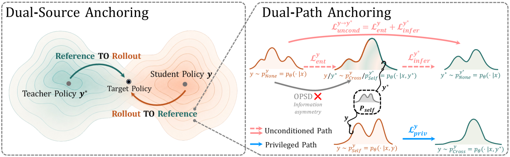
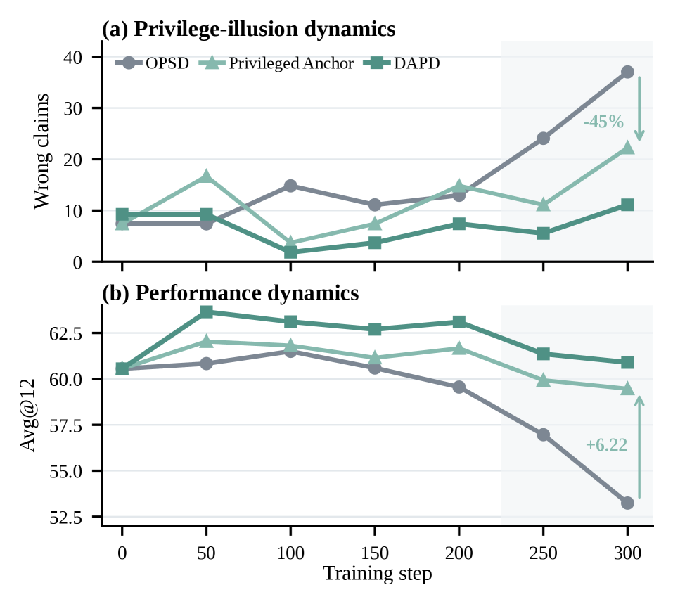

DAPD: Dual-Anchored Policy Distillation — Fixing the Privilege Illusion in On-Policy Self-Distillation
TL;DR
- "DAPD: Dual-Anchored Policy Distillation" (arXiv 2608.01735; Jianyu Wu, Yizhou Wang, Encheng Su, Chen Tang, Shixiang Tang) names and fixes a failure mode of on-policy self-distillation (OPSD): privilege illusion — the student learns behavior that depends on the reference answer its teacher saw during training, then acts at inference as if that answer were still available, asserting "recalled" answers it never derived.
- The diagnosis is information asymmetry: OPSD's teacher is the same policy conditioned on the ground-truth reference \(y^*\), the student is the same policy without it, so the KL target mixes "how to reason" with "what the answer is." DAPD inserts a self-conditioned bridge distribution (condition the policy on the very completion being predicted) and aligns teacher and student only along matched-information paths, in both reference-guided and rollout-guided directions.
- On Qwen3-4B across six benchmarks, DAPD beats OPSD by +2.00 points average (57.34 vs 55.34); the gain grows with scale (+2.69 at 4B, +2.78 at 32B on reasoning Avg@12) while OPSD's gains largely vanish at scale — and DAPD cuts "wrong claims" (unsupported recalled answers) by 73% relative to OPSD late in training.
Why this matters
On-policy self-distillation has quietly become one of the standard post-training moves: no separate teacher model, just the policy itself given privileged information (the reference completion) as the target distribution for its own unprivileged rollouts. This tracker has followed the OPD line closely — the on-policy distillation survey, multi-turn OPD via teacher replay, OPD-Squared's delta distillation, and MOPD's "no free lunch" caveats — and the recurring theme is that the construction of the teacher is where these methods succeed or silently fail.
DAPD's contribution is to give the failure a mechanism and a measurement. The privileged teacher \(p_\theta(\cdot\mid x, y^*)\) doesn't just show the student better reasoning; it also leaks the answer into every token-level target. A student that faithfully matches those targets learns, among other things, to behave like a model that knows the answer — confident assertions, skipped derivations, "I recall the answer is..." moves that are only justified when a reference actually sits in context. At inference there is no reference, but the behavior remains. That is precisely the "privilege illusion," and the authors show it is not hypothetical: under vanilla OPSD, unsupported answer-claims nearly triple over training (13.0 → 37.0 per 10k generations) while accuracy degrades.
For anyone using rubrics, hints, tools, or reference answers to strengthen a teacher — which is most of the current post-training playbook, including the rubric-as-privileged-information work already in this tracker — this is the cautionary tale plus the repair.
The core idea
Setup: training distribution \(\mathcal{D}\) over prompt–reference pairs \((x, y^*)\); student policy \(p_\theta\) samples rollouts \(y \sim p_\theta(\cdot\mid x)\). At each token position \(t\) of a rollout, OPSD compares two views of the same policy:
where \(p_{\mathrm{None},t}=p_\theta(\cdot\mid x,y_{<t})\) is the inference-condition view, \(p_{\mathrm{Cross},t}=p_\theta(\cdot\mid x,y_{<t},y^*)\) is the privileged view conditioned on the reference, \(\mathrm{D}\) is a token-level divergence, and \(\operatorname{sg}[\cdot]\) is stop-gradient. The asymmetry is visible in the equation: the target saw \(y^*\), the learner never will.
DAPD's key construction is a third, self-conditioned distribution. For a completion source \(s\in\{y, y^*\}\) (with \(\bar{s}\) the other one), define on the tokens of \(s\):
\(p_{\mathrm{Self}}\) conditions the policy on the very completion it is predicting — privileged in form, but carrying no information the completion doesn't already contain. It acts as a trainable bridge between the privileged and unprivileged worlds. Three directed objectives are built from these views:
Dual-Path Anchoring (DPA) then routes supervision along two matched-information paths per direction: an unconditioned path \(\mathcal{L}_{\mathrm{uncond}}^{s\to\bar{s}}=\mathcal{L}_{\mathrm{infer}}^{\bar{s}}+\mathcal{L}_{\mathrm{ent}}^{s}\) that aligns behavior under inference conditions, and a privileged path \(\mathcal{L}_{\mathrm{priv}}^{s}\) where both endpoints receive conditioning — so the student is never asked to imitate privilege-dependent behavior from an unprivileged position:
Dual-Source Anchoring (DSA) applies DPA in both completion directions — reference-guided and rollout-guided — with a balance \(\lambda\in[0,1]\):
reducing over-reliance on the reference (which the student may not be able to reach) while keeping its correctness signal. (The \(s\to\bar{s}\) superscript notation and per-term composition are transcribed from the paper; the exact per-term coefficients live in the paper's Eq. 9.)

Figure 3 from the paper: left, Dual-Source Anchoring balances correctness (reference-guided) against student reachability (rollout-guided); right, Dual-Path Anchoring for one direction — OPSD's mismatched arrow (Cross → None) is replaced by two matched-information paths through the Self bridge.
How it works
# DAPD training step (LoRA-adapted student p_theta on pairs (x, y*))
for each minibatch:
sample rollout y ~ p_theta(.|x) # on-policy
for each source s in {y, y*}, with s_bar the other:
compute on tokens of s:
p_None^s = p_theta(.|x, s_<t) # inference view
p_Self^s = p_theta(.|x, s_<t, s) # self-conditioned bridge
p_Cross^s = p_theta(.|x, s_<t, s_bar) # privileged view
L_ent^s = D( sg[p_Cross^s] || p_None^s ) # entangled distillation
L_infer^s = D( sg[p_None^s] || p_Self^s ) # inference anchor
L_priv^s = D( sg[p_Cross^s] || p_Self^s ) # privileged anchor
# dual paths per direction, dual sources across directions
L_DPA(s -> s_bar) = L_infer^{s_bar} + L_ent^s + L_priv^s
L = lambda * L_DPA(y -> y*) + (1 - lambda) * L_DPA(y* -> y)
backprop L; update LoRA parameters only
periodically refresh the shared snapshot serving as the
entangled-distillation teacher
# inference/privileged-anchor teachers come from the detached, LoRA-off base
Two implementation details are worth noting. First, the teachers are not all the same object: the two Entangled-Distillation teachers come from a shared, periodically-refreshed snapshot of the current student, while the Inference and Privileged Anchor teachers use the detached LoRA-off base model — the anchors are pinned to a stable reference rather than chasing the moving student. Second, everything is trained with LoRA rather than full fine-tuning, so all six distribution evaluations reuse one backbone with adapters toggled.
Results

Figure 2 from the paper: training dynamics for OPSD, Privileged Anchor, and DAPD averaged across five scales — (a) wrong claims per 10k generations, (b) Avg@12 on AIME24/AIME25/HMMT25.
- Main table (Qwen3-4B, six benchmarks): base 54.46 avg → OPSD 55.34 → DAPD 57.34. Per-benchmark vs OPSD: AIME25 +4.44, LiveCodeBench v5 +4.82, HMMT25 +3.06, AIME24 +0.55; BFCL v3 and IFBench essentially flat (−0.02, −0.67). The gains concentrate exactly where multi-step derivation matters.
- Scale trend (reasoning Avg@12): +1.13 (1.7B), +2.69 (4B), +2.41 (8B), +2.04 (14B), +2.78 (32B) over OPSD — and the paper notes OPSD's own gains largely disappear as scale grows, while DAPD's persist. Privilege illusion apparently doesn't self-resolve with capability.
- Privilege-illusion diagnostics: wrong claims (generations that assert an unsupported "recalled" answer after a failed derivation) rise from 13.0 to 37.0 per 10k under OPSD while Avg@12 falls 59.56 → 53.24. Adding only the Privileged Anchor cuts wrong claims ~45% and adds +6.22 Avg@12; full DAPD cuts them ~73% vs OPSD late in training (+7.66 Avg@12). The qualitative example is telling: on the same AIME24 problem, the OPSD student announces "I recall that the answer is likely..." and is wrong; the DAPD student derives the correct answer end-to-end.
- Ablations: path components stack (entangled only 62.13 → +inference anchor 63.43 → +privileged anchor 63.89), and sources are complementary — reference-guided alone 63.89, rollout-guided alone 65.09, both 65.28. Notably, the rollout-guided direction alone already beats reference-guided alone.
- OOD check: students optimized on reasoning data are also evaluated on coding/instruct benchmarks (Table 2 in the paper) to confirm the gains aren't domain-overfit.
How it connects
- [Survey: On-Policy Distillation for LLMs] and [MiniLLM Notes] frame the OPD design space; DAPD lives in the self-distillation corner where teacher = policy + privilege, and identifies that corner's characteristic pathology.
- [On-Policy Distillation Isn't a Free Lunch (MOPD)] catalogued when OPD hurts; privilege illusion is a concrete, measurable mechanism behind one class of those failures — with "wrong claims per 10k" as a reusable diagnostic.
- [FutureBridge-OPD] (in the tracker since yesterday) validates teacher interventions by their downstream trajectory effect; DAPD validates teacher targets by information symmetry. Both are filters on what the teacher is allowed to teach.
- [Rubric-Generated Feedback as Privileged Information] is the RL-side cousin: privileged signals strengthen training but must not be assumed at inference. DAPD's matched-information paths are the distillation-side answer to the same asymmetry.
- [OPD-Squared: On-Policy Delta Distillation] and [Multi-Turn OPD via Teacher Replay] modify what is distilled and when; DAPD modifies under which conditioning — the three are composable in principle.
Critical take
The mechanism is convincing; the accounting is where questions remain. DAPD evaluates three conditional distributions over two completion sources per step — roughly triple OPSD's forward cost per token (the LoRA-sharing trick helps memory, not FLOPs), and the paper's headline "+2.00" doesn't come with a compute-matched OPSD baseline given extra epochs. The gains are also strongly concentrated in math/code reasoning; BFCL and IFBench are flat, so "privilege illusion degrades performance" should really read "degrades derivation-style tasks." The wrong-claims metric is the paper's most interesting artifact, but its detection (classifying a generation as an unsupported answer-assertion) inherits the usual model-graded fragility. And the ablation's quiet surprise — rollout-guided alone (65.09) nearly matches full DSA (65.28) — suggests most of the value comes from not chasing an unreachable reference, which slightly deflates the dual-source story. Finally, the privilege studied here is one specific kind (the ground-truth reference in context); rubrics, tool outputs, and retrieved documents are messier privileges where the Self-bridge construction is less obviously well-defined. Still, this is the cleanest formalization yet of a failure everyone doing OPSD has probably shipped without noticing, and the fix requires no new models, no verifier, and no reward — just conditioning discipline.
If you remember three things
- Self-distillation with a privileged teacher trains the student to fake privilege: under OPSD, unsupported "I recall the answer" claims nearly triple over training while accuracy drops — the student imitates answer-aware behavior it can't back up at inference.
- The fix is matched information, not weaker teachers: a self-conditioned bridge distribution \(p_\theta(\cdot\mid x,s_{<t},s)\) lets DAPD align privileged-to-privileged and unprivileged-to-unprivileged views only, in both reference- and rollout-guided directions.
- The gap widens with scale: OPSD's gains fade by 32B while DAPD holds +2.78 — conditioning asymmetry, not model capacity, is the binding constraint on self-distillation quality.